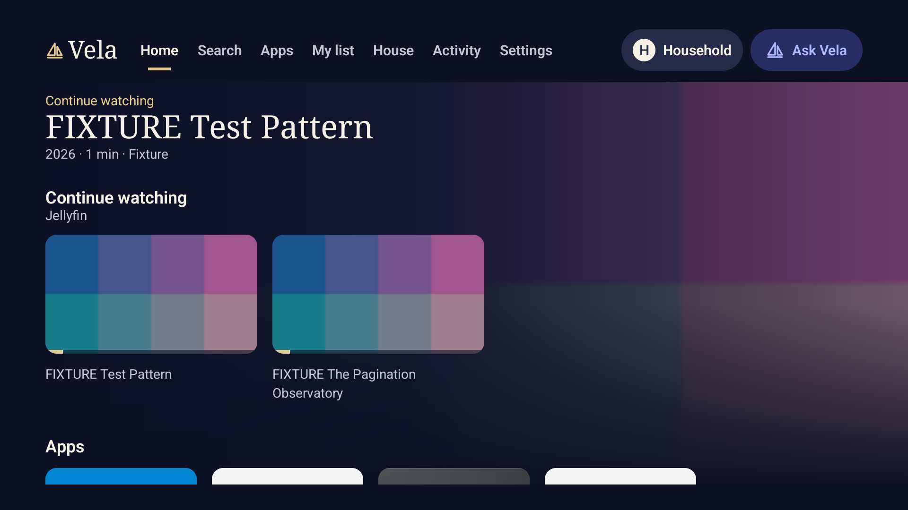
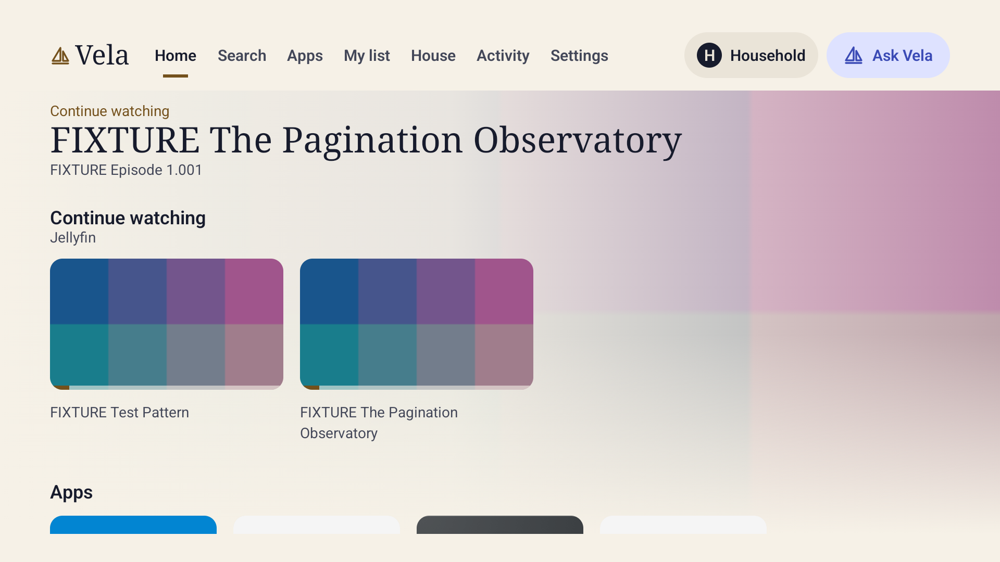
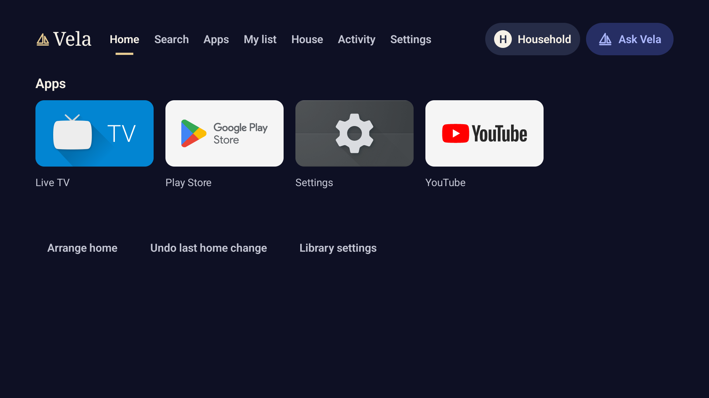
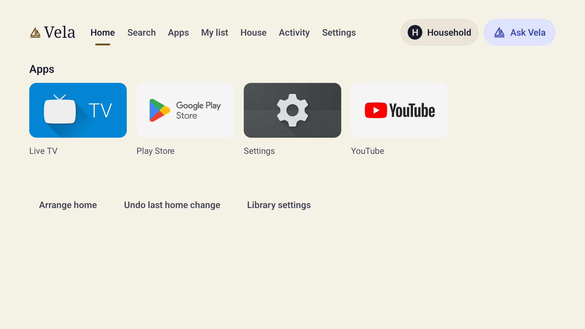
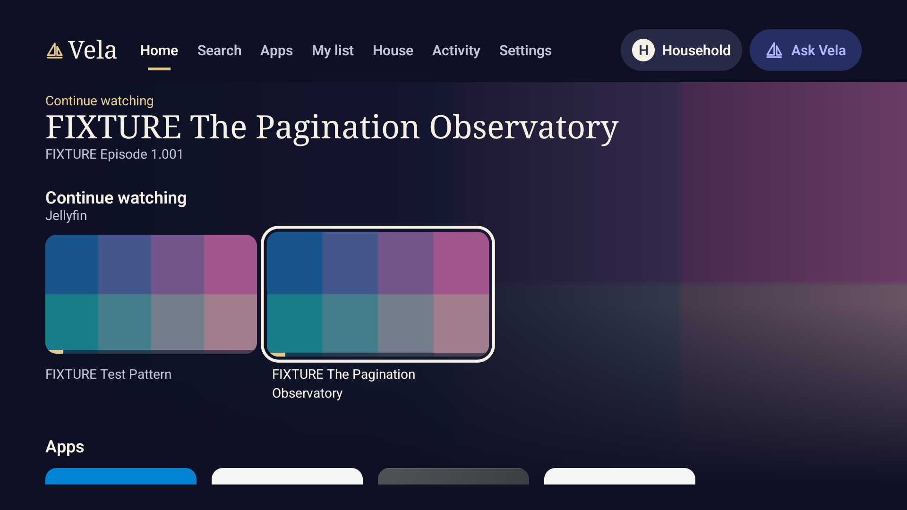
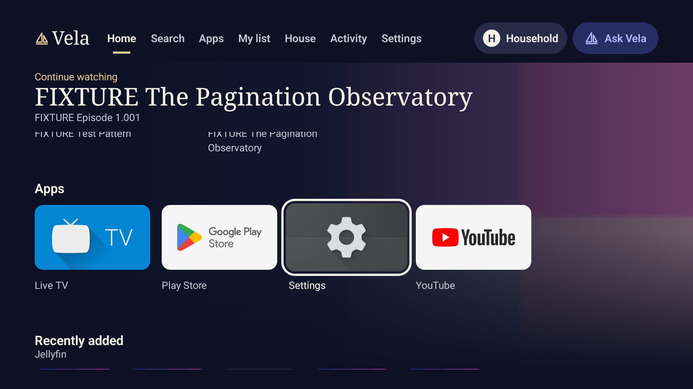
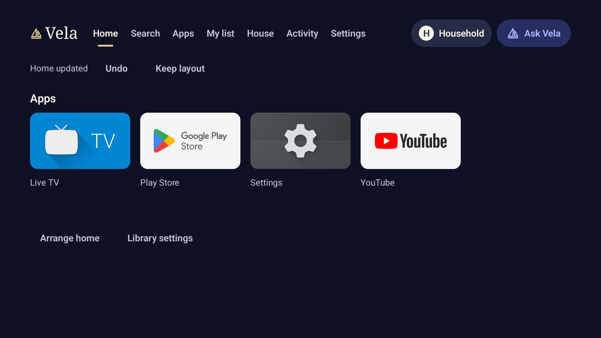
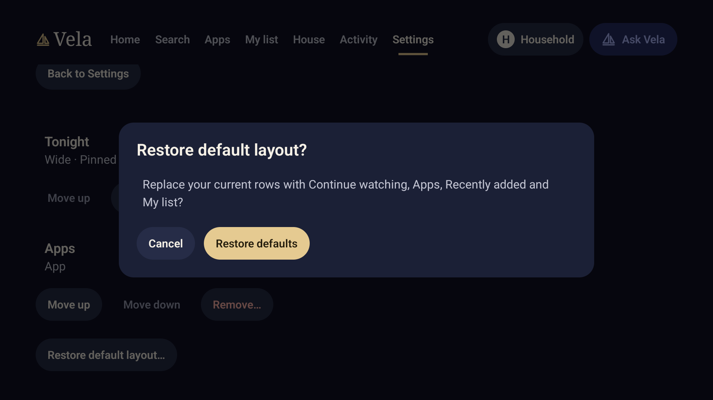

Actual Android TV app captures, 1920 × 1080. The library uses a labelled synthetic Jellyfin catalog and original test-pattern artwork.

Continue watching leads Home. The header describes a title; Ask Vela stays in the top bar.

Day theme. The header retains the last focused episode after returning from Settings.

Without a connected library, Apps fills the useful space. Keep layout has dismissed the notice; its one-step Undo remains available.

The same apps-only state in Day. Empty library rows do not occupy space.

Moving remote focus to an episode updates the media header.

Moving down to Apps keeps that episode in the header. No app is launched.

A native row move produces a compact notice. Undo restored the default order in the live check; stale changes are rejected.

Restore defaults is explicit and confirmable. Existing custom layouts are preserved until the owner changes them.
These captures establish this emulator's rendering and the recorded Home interactions. Physical Shield testing remains paused; live providers, services and full OS acceptance remain open.